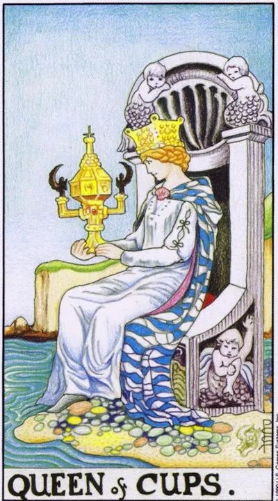

Minor Arcana · Cups
XIIIQueen of Cups
The Queen looks into a closed bowl on the seaside: deep empathy, intuition and the ability to accept someone else’s pain without drowning in it.
Archetype and core meaning
The Queen sits on a throne at the water's edge, and she looks mesmerized into the ornate bowl -- the only one closed in Waite's deck -- she doesn't spill feelings right and left: her world is inside, and it's as vast as the sea behind it, and it's a mature emotion to feel deeply and remain whole.
The card represents compassion, intuition and spiritual wisdom: a person who is approached to cry and come out more easily; the Queen listens without judgment and sees the subtext of words; her power is paradoxical: she can guide the flow without fighting it; the card's advice is to trust the quiet knowledge that comes not through analysis, but through the heart.
Daily life
Everyday life asks for gentleness: to talk to a friend, to cook special for a tired loved one, to water flowers in silence. The house works like a port in a storm - people are drawn here themselves. Watch the dose: help is great, become a round-the-clock ambulance - no. Keep the evening.
Work and career
The value of the moment is human: negotiating with a difficult client, supporting a colleague before burnout, resolving conflict in a team. You read between the lines best — use it in hiring and mediation. For creative professions, the card gives access to subtle material: the psychology of heroes, the atmosphere, the nuance.
Relationships
Deep without drama: the partner feels accepted, including the things he doesn't say, the relationship goes to a level of intimacy where hugs speak longer than words, your sensitivity is not a defect, it's a magnet, just filter out those who come only to complain.
Health
Health is driven by an emotional rhythm: you get sick from negativity, you get well from silence and water, swimming, baths, walks by water, enough sleep, Empaths hoard the stuff of others in their bodies, so rebooting alone regularly is not a whim, it's hygiene.
Spiritual meaning
The closed cup is a mystical vessel: knowledge that cannot be told can only be contained. One of the most mediumistic cards of the deck is dreams, premonitions, reading states. Practices are a dream diary, moon rhythms, the art of listening. The throne is not on land by chance: it is necessary to sympathize from stability, not from the wave.
The sea swept over the throne: borders dissolved, the pain of others displaced their own, sensitivity became vulnerability.
Archetype and core meaning
The queen still looks into the bowl, but she can't see the bottom: her life drowned in other people's circumstances. The straight position held the shore, the inverted one merged with the wave - saving instead of her own life, a relationship where "we" ate the "me."
The card represents emotional instability: tears at every occasion, manipulation of resentment, passive aggression in the guise of caring. Sometimes it's a draining person nearby, sometimes it's you who have forgotten the question, "What do I want?" Kindness is not canceled; it needs to be reshaped: the real depth must have walls of a vessel.
Daily life
A day spent for everyone but yourself: other people's problems solved, yours not started; mood depends on someone else's message. Do an experiment — say no to one request a day and notice that the world doesn't collapse.
Work and career
Empathy without borders turns into problems: the tasks of others, the covering of other people's mistakes, the deadlines that drown you, you are either reproached with "nervousness" or used as a guild vest. Return the role of a professional: sympathy for a colleague is good after five o'clock, not instead of his report.
Relationships
Codependent scenario: dissolving in your partner, saving someone who didn't ask, jealous of their world without you, or vice versa, the partner drowns you in his experiences and you forget your face, the diagnosis is accurate: where there are no two separate people, there is no relationship, there is a merger, ending in suffocation.
Health
Overcrowding is visible on the body: migraines before the rain, a lump in the throat from the uncried, intestines on nervous grounds, exacerbations before the cycle. You need regular discharge: sports to fatigue, crying when asked, therapy as the norm, not a last resort.
Spiritual meaning
Flooded Temple: the gift of clairvoyance is on constantly and without a filter, hence exhaustion and confusion of "where mine is, where is stranger." Return control: visualizing the walls of the vessel around your field, daily cleaning, grounding. While you are an open window into alien worlds, become the door you close yourself.
🌿 How the school reads this rank
The main idea
It controls the emotional space, and it's powerful in the senses, the intonations, the hints, and the ability to bring about the right state.
How it manifests
In relationships, vulnerability, subtext and the ability to cause care; in work, subtle understanding of people, creativity and intuition; in development, deep feeling without necessarily showing emotions.
The shadow side
Emotions turn into hidden pressure, guilt, and addiction.
Keywords
Emotions · intuition · subtext · vulnerability · influence
📜 In detail — from the rank lecture
Essence of the card
Water is a fusion where boundaries break down and everything comes together; emotions are “when there is no time to think, because emotions are boiling.”
Upright position
- Maximum adjustment: to appear vulnerable and defenseless to want to protect and love; not action, but love and emotions.
- Tool – intonation and ambiguity: refuses in such a way that it is clear that “she is very much for”; hints, subtext.
- The cup is treated as the ark-source of everything hidden: the source of emotions is femininity, the ability to show yourself weak.
- Her strength lies in the emotions she feels, not the emotions she shows, “even a little stronger than the king.”
- A man is a slippery person, subtly feeling your emotions and waiting for action from you.
- Images: Marilyn Monroe – “the purest queen of cups” (the image of a fool with perfectly regulated emotions; sexuality was a convenient pitch – the nuance of pentacles); Halfumn Lovegood – the aspiring queen of cups: “not of this world”, deep wisdom, intuitive foresight; stereotyped blonde – a negative pole (“in the head at zeros, emotions above the roof”), rehabilitated by Reese Witherspoon.
- Actors, creativity and intuition of the tarologist go through the cups. The epic king of the cups is Gorbachev (perestroika as a water fusion).
Negative meaning
• The school lecture did not give any negative significance to this card.
School emphases and distinctive points
- The main reception of the lecture is film portraits as a textbook: Musketeers, Gone with the Wind, Downton, The X-Files, Harry Potter.
- His astrology is simple: cancer/scorpion/fish are cups, twins/balances/waters are swords, rams/lion/shooters are wands, corpuscles/maiden/capricorn are pentacles. The personality consists of four elements: the card shows the prevailing regime, Aries can fall out any queen.
- Menagerie: the cat of wands - witch and charm (the cat can not be trained - only create a desire, like Kuklachev hungry cats; the dog obeys orders - this is about swords); the pentacle hare - fertility and childbirth; the butterfly of swords - the transformation of the caterpillar into an exalted (as well as a dragonfly); the cups of fish - there is no mermaid: only the king lives completely in the sea.
- Epochal scale: the destruction of walls and borders reads on water (Gorbachev), the return of walls – again swords.
- Instead of examples of layouts – portrait characteristics of public figures; the Slavic series and the topic of health in the lecture do not sound at all.
Keywords
Emotions, intonations and ambiguity, vulnerability as a force, source-ark.